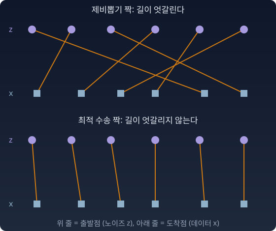
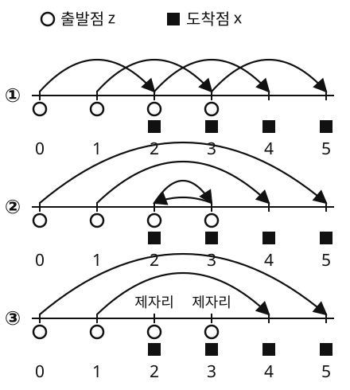

조건부 플로우 매칭에서 보았듯, 짝마다 길은 곧아도 그 길들을 평균한 흐름은 휜다. 휜 흐름을 큰 걸음으로 따라가면 빗나가서 걸음을 잘게 나눠야 한다. 휘는 까닭은 한 점을 여러 짝의 직선이 엇갈려 지나가는 데 있었다. 그렇다면 길이 덜 엇갈리게 짝을 지을 수는 없을까? 길은 여전히 직선이다. 바뀌는 것은 어느 출발점을 어느 도착점과 짝지을지다.
철새의 항로 배정 — 얽히지 않는 짝
수천 마리의 새가 동시에 출발한다. 출발점과 도착지를 제비뽑기로 짝지으면 길이 얽힌다. 시베리아 동쪽의 새가 한반도 서쪽으로, 시베리아 서쪽의 새가 한반도 동쪽으로 가면 중간에서 길이 교차한다.
항로를 정해 주는 사람이라면 다르게 짝을 지을 것이다. 시베리아 동쪽의 새는 한반도 동쪽으로, 시베리아 서쪽의 새는 한반도 서쪽으로. 길이 얽히지 않고 모든 새가 나는 거리의 합도 줄어든다. 실제 새가 이렇게 짝을 짓는다는 뜻은 아니다. 짝을 짓는 쪽은 우리다.
옮기는 비용의 합이 가장 작아지도록 짝을 짓는 문제를 최적 수송(optimal transport, OT)이라 부른다.

출발점 여섯 개(위 줄, 노이즈 z)와 도착점 여섯 개(아래 줄, 데이터 x)를 두 가지로 짝지었다. 위: 제비뽑기로 지은 짝은 길이 여러 번 엇갈린다. 아래: 옮기는 거리의 제곱 합이 가장 작은 짝은 왼쪽부터 차례로 이어져 길이 엇갈리지 않는다
얽힌 길이 왜 문제인가
한 점을 여러 짝의 직선이 지나면 그 점의 속도는 그 짝들의 속도를 평균한 값이 된다. 그런데 주변 속도장을 따르는 실제 궤적은 ODE의 해라서 서로 교차할 수 없다. 한 점에서 속도는 하나뿐이니까. 그래서 조건부 직선들이 얽혀 있으면, 실제 궤적은 교차점 근처에서 평균된 속도를 따라 휜다. 조건부 직선(점선)과 실제 궤적(실선)을 함께 그린 속도장 위젯에서 실선이 휘는 이유가 이것이다. 휜 궤적은 ODE를 적은 걸음으로 풀면 크게 틀린다. 봉우리 일곱 개짜리 데이터에서 직선 조건부 경로로 배운 속도장을 2걸음으로 풀면, 봉우리별 도착 비율이 참 비율에서 총변동(두 비율 표의 차이 절댓값을 더해 반으로 나눈 값) 0.45만큼 어긋난다. 200걸음이면 0.01 남짓이다(「바람의 크기」 절의 파이썬).
짝을 잘 지어 조건부 직선들이 덜 얽히면, 평균된 속도도 덜 흔들리고 궤적도 곧아진다. 두 가지 방법이 널리 쓰인다. 미니배치 최적 수송(통(Alexander Tong) 외, 2023; 풀라디안(Aram-Alexandre Pooladian) 외, 2023): 데이터 전체를 한꺼번에 짝지을 수는 없으니, 훈련 배치 안에서만 노이즈와 데이터를 최적 수송으로 짝짓는다. 정류 흐름(rectified flow, 류싱차오(Xingchao Liu)·궁청웨(Chengyue Gong)·류창(Qiang Liu), 2022): 짝을 먼저 알 길이 없으니, 한 번 학습한 흐름으로 노이즈를 데이터까지 보내고 그 (출발, 도착) 짝으로 다시 학습한다(reflow). 반복할수록 궤적이 곧아져 한 걸음 생성에 가까워진다.
와서스타인 거리와의 연결
KL 발산은 "두 분포가 같은 사건에 얼마나 다른 확률을 매기는가"를 묻는다. 와서스타인 거리는 전혀 다른 질문을 한다 — “한 분포를 다른 분포로 옮기려면 흙을 얼마나 날라야 하는가?”
KL은 확률의 비율을 본다. 같은 위치에서의 차이. 와서스타인은 확률의 이동을 본다. 한 곳에서 다른 곳으로의 운반. KL과 달리 대칭이고 삼각부등식도 지키는, 진짜 거리다.
비용을 무엇으로 재는지도 중요하다. 거리 |x − z|를 더하면 W₁, 제곱거리 |x − z|²를 더하면 W₂다. 최적 수송으로 짝을 지은 조건부 플로우 매칭(OT-CFM)은 보통 제곱거리를 쓴다. W₁은 한 줄 위에서 짝을 어떻게 바꿔도 총비용이 같아지는 경우가 있어 최적 짝이 하나로 정해지지 않는다(아래 문제 6). 제곱거리는 순서를 지키는 짝 하나만 남기고, 그 짝의 직선들은 서로 교차하지 않는다.
짝을 W₂ 최적으로 지으면 표본 보간 (1 − t)z + tx의 분포는 맥캔(Robert McCann)이 1997년 논문에서 변위 보간(displacement interpolation)이라 부른 것이 된다. W₂가 재는 기하학에서 두 분포를 잇는 측지선(가장 곧은 길)이다. 분포 공간의 두 길(확률을 섞는 덧셈의 길, 확률을 곱해 섞는 곱셈의 길)과 나란히 놓이는, 세 번째 종류의 "사이"다. 덧셈의 길의 그 직선이 쓰이는 것이 아니라, 모양이 닮은 다른 직선이 쓰인다.
플로우 매칭에서는 이렇게 정리된다.
랜덤 짝 + 직선: 각 새가 제비뽑기한 목적지로 직진한다. 쉽지만 길이 얽힌다.
OT 짝 + 직선: 새들의 출발-도착 짝을 최적화한다. 길이 덜 얽히고, 궤적이 곧다.
직접 움직여 보기
불러오는 중…
파이썬
import numpy as np
from scipy.optimize import linear_sum_assignment
rng = np.random.default_rng(1)
n = 256
z = rng.normal(size=(n, 2)) # 노이즈 출발점
x = rng.normal(size=(n, 2)) * 0.3 + rng.choice([-2.0, 2.0], (n, 1)) * [1, 0] # 두 덩어리 데이터
def total(perm):
d = x[perm] - z
return np.linalg.norm(d, axis=1).sum(), (d**2).sum()
rand = rng.permutation(n)
_, ot2 = linear_sum_assignment(((z[:, None] - x[None])**2).sum(-1)) # 제곱거리 (W₂)
_, ot1 = linear_sum_assignment(np.linalg.norm(z[:, None] - x[None], axis=2)) # 거리 (W₁)
for name, p in [("랜덤 짝", rand), ("W₁ 최적 짝", ot1), ("W₂ 최적 짝", ot2)]:
c1, c2 = total(p)
print(f"{name:8s} Σ|x−z| {c1:7.1f} Σ|x−z|² {c2:7.1f}")
# 1차원 한 줄: z = {0,1,2,3}, x = {4,5,6,7}
z1, x1 = np.arange(4.0), np.arange(4.0) + 4
for perm in [(0, 1, 2, 3), (3, 2, 1, 0)]:
d = x1[list(perm)] - z1
print(perm, "W₁ 비용", abs(d).sum(), " W₂ 비용", (d**2).sum(), " t=½ 위치", (z1 + x1[list(perm)]) / 2)
# 랜덤 짝 Σ|x−z| 585.0 Σ|x−z|² 1551.6
# W₁ 최적 짝 Σ|x−z| 360.2 Σ|x−z|² 589.7
# W₂ 최적 짝 Σ|x−z| 361.4 Σ|x−z|² 537.2
# (0, 1, 2, 3) W₁ 비용 16.0 W₂ 비용 64.0 t=½ 위치 [2. 3. 4. 5.]
# (3, 2, 1, 0) W₁ 비용 16.0 W₂ 비용 84.0 t=½ 위치 [3.5 3.5 3.5 3.5]
두 최적 짝은 서로 다르다. 각자 자기 비용에서 이긴다. 마지막 두 줄에서 W₁은 두 짝을 구별하지 못하지만, 거꾸로 짝지은 쪽은 t = ½에 네 마리가 한 점(3.5)에 모인다.
수확
“OT는 길을 바꾸지 않는다. 짝을 바꾼다. 짝이 덜 얽히면 평균된 속도장이 덜 휘고, 적은 걸음으로 풀 수 있다. KL이 '확률의 비율’을 보는 자라면, 와서스타인은 '확률의 이동’을 보는 자다.”
인물 이야기 — Gaspard Monge와 Leonid Kantorovich: 흙을 나르는 문제
「흙을 얼마나 날라야 하는가」라는 물음은 비유가 아니라 실제 공사장에서 나왔다. 가스파르 몽주(Gaspard Monge, 1740년대–1818)는 프랑스 메지에르의 공병 학교에서 수학을 가르쳤다. 공병의 일에는 땅을 파고 메우는 일이 따른다. 한쪽에서는 땅을 파내고(déblais, 파낸 흙), 다른 쪽에서는 그 흙으로 메워야 한다(remblais, 메울 자리). 파낸 흙 한 줌 한 줌을 어느 자리로 보내야 나르는 거리의 합이 가장 작을까?
몽주는 1781년 논문 「파낸 흙과 메울 자리의 이론에 대한 논고」(Mémoire sur la théorie des déblais et des remblais)에서 이 물음을 수학으로 적었다. 오늘날 최적 수송 문제의 첫 꼴로 꼽히는 글이다. 이 글에서 몽주는 최적으로 나르는 길들이 서로 엇갈리지 않는다는 점도 짚었다고 전해진다. 위에서 본 「제곱거리로 재면 순서를 지키는 짝만 남고 길이 엇갈리지 않는다」는 성질의 먼 조상이다. 다만 몽주의 꼴은 흙 한 줌을 반드시 한 자리로만 보내야 해서, 풀기가 무척 까다로웠다.
160년쯤 뒤, 소련의 수학자 레오니트 칸토로비치(Leonid Kantorovich, 1912–1986)는 전혀 다른 곳에서 같은 문제에 닿았다. 1939년 합판 공장의 생산 계획을 짜다가 오늘날 선형계획법이라 부르는 방법을 만들었고, 1942년에는 몽주의 글을 모른 채 수송 문제를 새로 적었다. 결정적인 차이는 한 출발점의 흙을 여러 도착점으로 나눠 보낼 수 있게 한 것이다. 「누가 누구와 짝인가」 대신 「어디에서 어디로 얼마만큼」을 정하는 표, 곧 위 식의 짝짓기 Π(결합분포)가 이 꼴이다. 이렇게 바꾸자 문제가 선형계획법으로 풀리는 꼴이 되었다. 칸토로비치는 1948년에야 몽주의 글을 알고 「몽주의 한 문제」라는 논문으로 둘을 이었다. 자원을 가장 알맞게 나누는 이론으로 1975년 노벨 경제학상을 차알링 쿠프만스(Tjalling Koopmans)와 함께 받았다.
그래서 이 문제를 흔히 몽주–칸토로비치 문제라 부른다. 공병의 흙 나르기에서 합판 공장의 생산 계획을 거쳐, 노이즈 표본과 이미지 표본을 짝짓는 일까지 같은 식이 이어진다.
문제 6. 겹친 줄 위의 네 마리
한 줄 위에 출발점 z = {0, 1, 2, 3}, 도착점 x = {2, 3, 4, 5}가 있다. 이번에는 두 줄이 겹친다. 아래 그림은 짝 셋을 화살표로 그린 것이다. (가) ① 순서대로 짝(0→2, 1→3, 2→4, 3→5)과 ② 거꾸로 짝(0→5, 1→4, 2→3, 3→2)의 총비용을 거리(W₁)와 제곱거리(W₂)로 각각 구하라. 24가지 짝 가운데 W₁ 비용이 가장 작은 짝은 몇 개인가? (나) ③ 짝(0→5, 1→4, 2→2, 3→3)은 W₁ 비용이 ①과 같다. ①과 ③에서 t = ½의 위치를 견주라. W₁ 비용이 같으면 길도 똑같이 얽히지 않는가?

한 줄 위에 0부터 5까지 눈금이 있고, 출발점 0, 1, 2, 3 (동그라미)과 도착점 2, 3, 4, 5 (네모)가 있다. ① 순서대로 짝, ② 거꾸로 짝, ③ 0→5, 1→4, 2→2(제자리), 3→3(제자리)을 줄 위의 화살표로 그렸다
(위 짝짓기 위젯의 「문제 6 불러오기」로 네 점을 불러와 자기 계산과 견줄 수 있다.)
함께 풀기
김민준
norm으로 비용 행렬 만들어서 ①과 ②를 계산했어요. ①은 W₁ 8, ②는 10이에요. 파이썬의 한 줄 예에서는 둘 다 16으로 같았는데 이번엔 달라요. 그러니까 이번엔 W₁도 짝을 하나로 정해 줘요. ①만 최적이에요.
선생님
24가지 짝을 다 돌려 봐요.
김민준
…비용 8인 짝이 18개예요. 하나가 아니네요.
선생님
한 줄 예에서 모든 짝의 비용이 같았던 이유가 뭐였어요?
김민준
모든 도착점이 모든 출발점보다 오른쪽이라 |x − z| = x − z고, 더하면 Σx − Σz로 짝과 상관없었어요. 이번엔 3→2처럼 왼쪽으로 가는 짝이 생길 수 있어요. 그런 짝만 없으면 비용은 늘 14 − 6 = 8이에요. 출발점 3을 2가 아닌 세 곳 가운데 하나로 보내면 나머지 셋은 아무렇게나 짝지어도 되니까 3 × 6 = 18개예요.
선생님
그럼 제곱거리로 재면요?
김민준
①은 2² × 4 = 16, ②는 25 + 9 + 1 + 1 = 36이에요. 제곱거리로는 ①이 하나뿐인 최적이고요. 제가 쓴 np.linalg.norm이 W₁ 비용이었고, OT-CFM이 보통 쓰는 건 제곱이에요.
이서연
(나)는 쉬워. ③도 W₁ 비용이 8로 최소니까 ①만큼 좋은 짝이지. 최소 비용 짝이면 길도 덜 얽혔을 거야.
선생님
t = ½의 위치를 직접 써 봐요.
이서연
①은 1, 2, 3, 4예요. ③은 2.5, 2.5, 2, 3이에요. 0→5와 1→4 두 마리가 2.5에서 만나요. 0→5는 그 전에 t = 0.4에 2 자리에 서 있는 새를 지나가고요. ③의 제곱거리 비용은 25 + 9 + 0 + 0 = 34로 ①의 16보다 훨씬 커요.
이서연
W₁은 나르는 거리만 같으면 누가 멀리 가고 누가 제자리에 있든 상관하지 않아요. 제곱은 한 마리가 멀리 가는 것을 무겁게 벌주니까 다들 비슷한 거리를 가는 순서대로 짝만 남겨요.
선생님
그리고 두 마리가 만난 그 점에서 신경망은 무슨 속도를 배워야 해요?
김민준
속도가 +5, +3인 새가 같이 있으니까 평균 +4요. 그 점을 떠나는 두 새를 다시 갈라놓을 방법이 없어요. 그래서 실제 흐름은 ③을 흉내 낼 수 없고, 궤적이 휘어야 해요.
김민준
발표 순서 정할 때 다들 같은 시간에 몰려서 “앞 사람 끝나면” 하고 줄 서는 거랑 같네요. 순서를 처음부터 잘 정해 두면 줄이 안 생기고요.
문제 7. 한 걸음에도 맞는 짝
데이터가 x ~ N(4, 0.5²), 노이즈가 z ~ N(0, 1)인 설정을 다시 본다. 짝을 제비뽑기로 지으면 주변 속도장으로 오일러 방법을 한 걸음에 풀었을 때 모든 샘플이 4에 모였다. 이번에는 짝을 순서대로 짓는다. 노이즈 z에는 데이터 x = 4 + 0.5z를 짝짓는다(1차원에서 제곱거리 비용이 가장 작은 짝이다). (가) 이 짝짓기에서도 z만 모으면 노이즈 분포, x만 모으면 데이터 분포인가? (나) 주변 속도장 v(y, 0)을 구하고, 오일러 한 걸음으로 만든 샘플의 분포를 구하라.
함께 풀기
김민준
(가)는 돼요. z가 N(0, 1)이면 4 + 0.5z는 N(4, 0.25)니까요. (나)는 한 걸음에 다 4로 모였던 그 계산 그대로예요. v(y, 0) = E[x] − y = 4 − y라서 또 전부 4에 모여요.
선생님
v(y, 0) = E[x] − y는 어떤 조건에서 나온 식이었죠?
이서연
t = 0에서 z가 정해져도 x는 아무것이나 될 수 있다는 것, 곧 z와 x가 독립이라는 조건이었어요. 이번 짝은 z를 알면 x가 4 + 0.5z로 딱 정해져요. 그 조건이 깨졌어요.
이서연
그러면 t = 0에서 위치 y = z에 있는 새의 속도는 x − z = 4 + 0.5y − y = 4 − 0.5y 하나뿐이야. 평균 낼 것도 없어.
김민준
한 걸음 가면 y + 4 − 0.5y = 4 + 0.5y, 곧 N(4, 0.25)예요. 데이터 분포 그대로예요. 코드로 걸음 수를 1, 2, 10으로 바꿔도 표준편차가 다 0.50이에요.
선생님
왜 걸음 수와 상관이 없을까요?
이서연
이 짝에서 xt = 4t + (1 − 0.5t)z라서 z가 큰 새는 언제나 위에 있어. 어느 두 새의 길도 엇갈리지 않으니까 한 점을 지나는 짝이 하나뿐이고, 평균된 속도가 짝의 속도 그대로야. 흐름선 자체가 직선이라 큰 걸음도 빗나가지 않아.
김민준
미니배치 최적 수송이 노리는 게 이거네요. 데이터 전체의 이런 짝은 모르니까 배치 안에서만이라도 맞춰 주는 거고요. 조교가 답안지를 학번순으로 쌓아 두면 성적 입력할 때 엇갈릴 일이 없는 거랑 같아요.